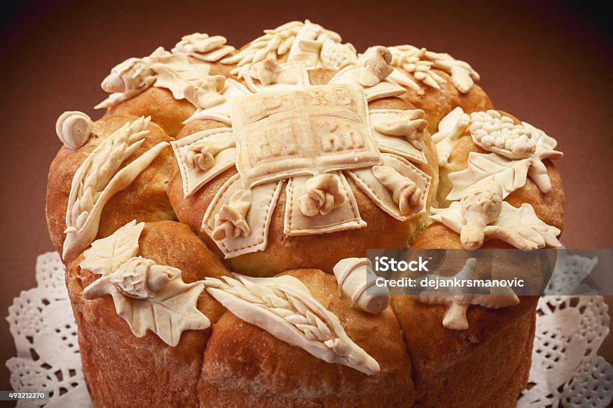
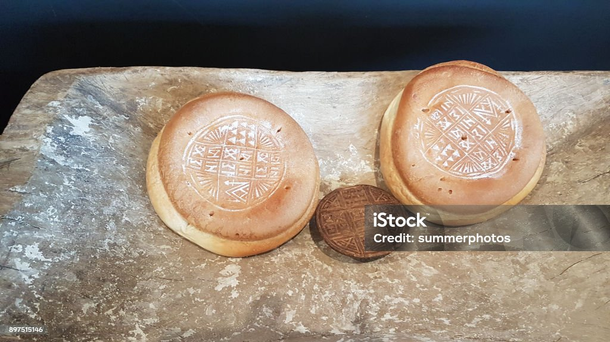
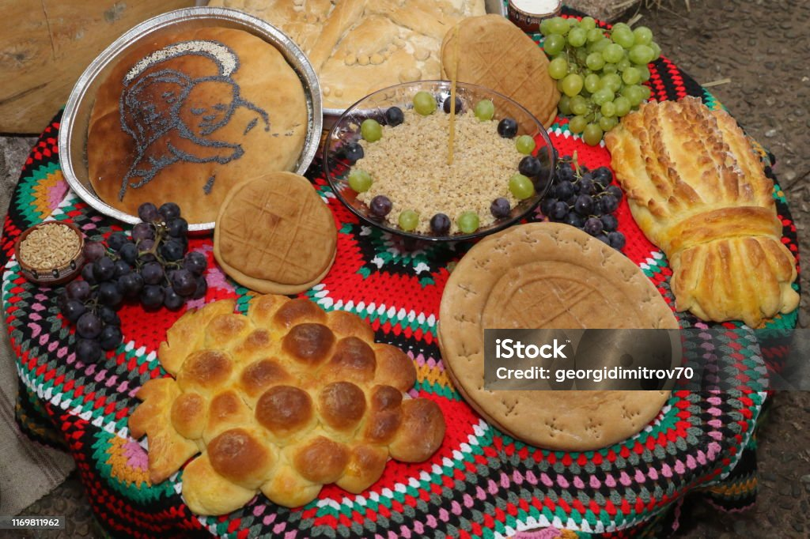
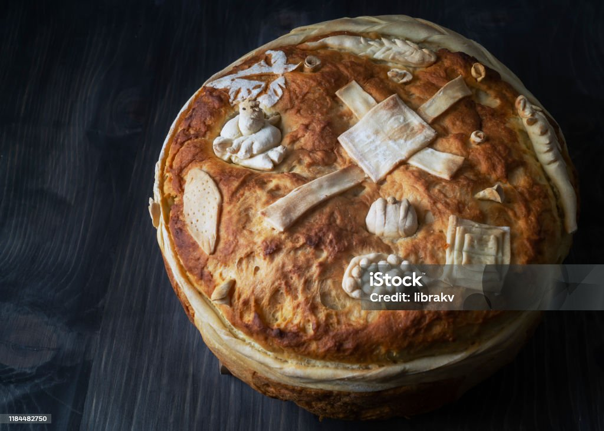
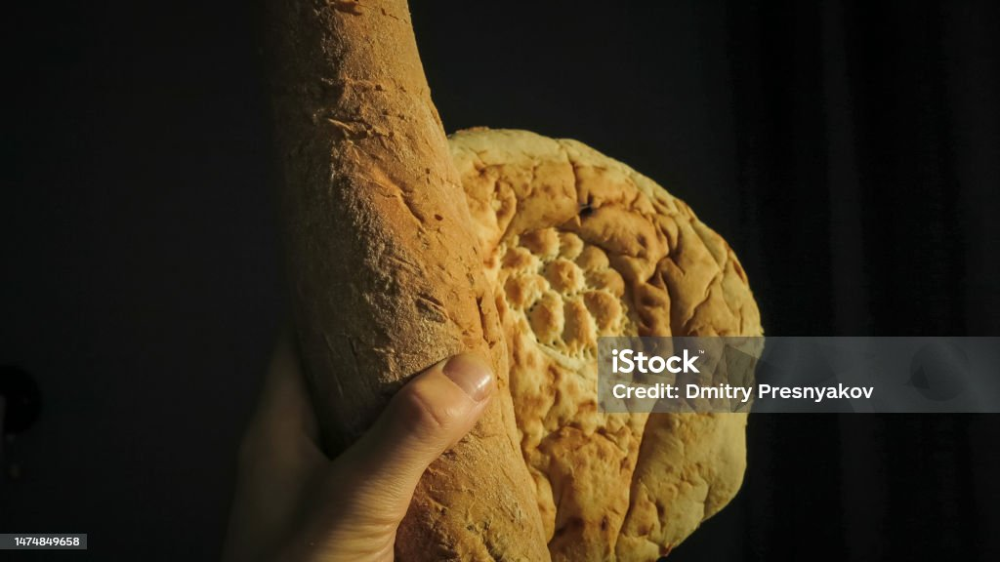
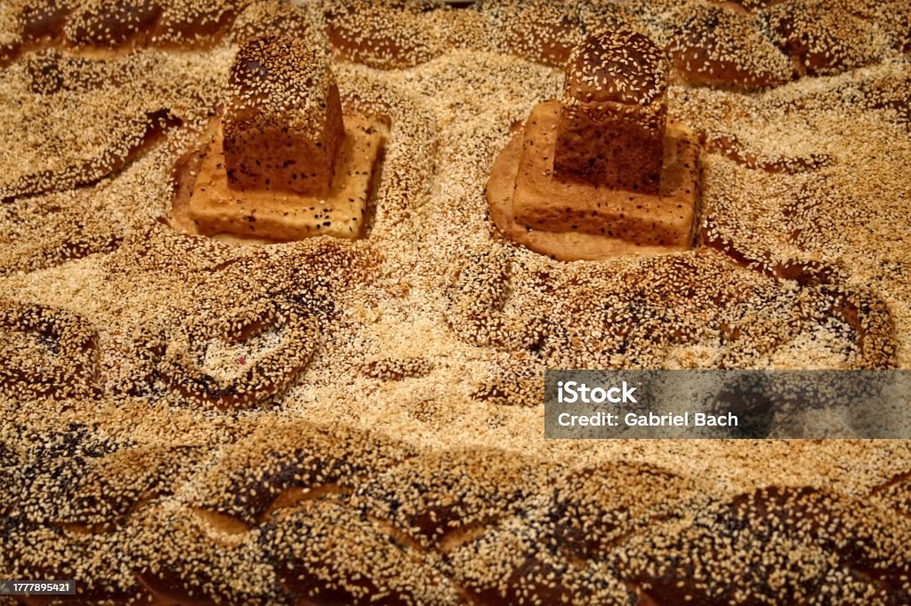
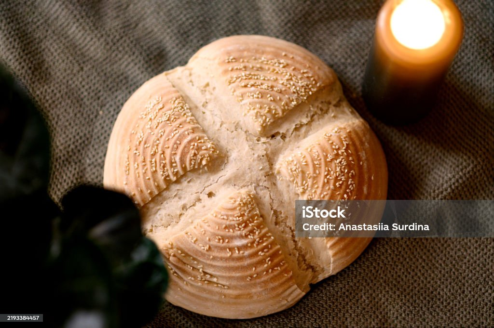
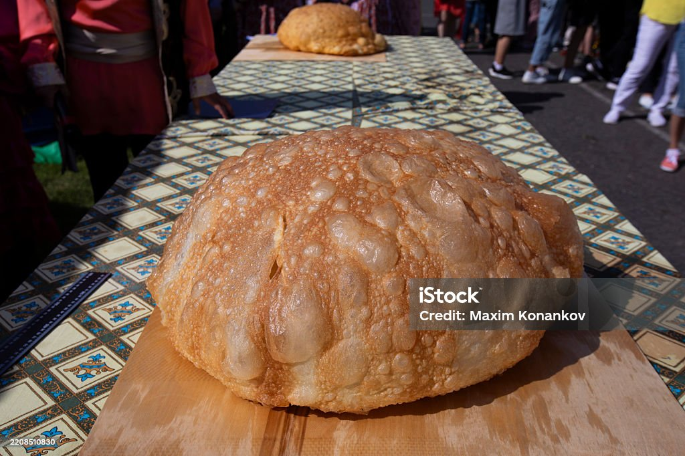

1: 1 ½ φλιτζάνια (355 ml) πλήρες γάλα
1: 1½ cups (355 ml) whole milk
2: 2 κουταλάκια του γλυκού στιγμιαία μαγιά
2: 2 teaspoons instant yeast
3: 5 φλιτζάνια (720 γρ.) αλεύρι για όλες τις χρήσεις, και περισσότερο αν χρειαστεί
3: 5 cups (720 g) all-purpose flour, plus more as needed
4: ½ φλιτζάνι (170 γρ.) μέλι
4: ½ cup (170 g) honey
5: 1 μεγάλο αυγό σε θερμοκρασία δωματίου
5: 1 large egg at room temperature
6: 1 κουταλιά της σούπας (15 ml) σησαμέλαιο
6: 1 tablespoon (15 ml) sesame oil
7: 2 κουταλάκια του γλυκού αλάτι
7: 2 teaspoons table salt
8: 7 κουταλιές της σούπας (100 γρ.) αλατισμένο βούτυρο σε θερμοκρασία δωματίου
8: 7 tablespoons (100 g) salted butter at room temperature
Γέμιση
Filling
1 ½ φλιτζάνια (300 γρ.) χουρμάδες χωρίς κουκούτσι
1½ cups (300 g) pitted dates
11 κουταλιές της σούπας (155 γρ.) αλατισμένο βούτυρο σε θερμοκρασία δωματίου
11 tablespoons (155 g) salted butter at room temperature
1 ¼ φλιτζάνια (190 γρ.) ολόκληρα αμύγδαλα, χοντροκομμένα
1¼ cups (190 g) whole almonds, coarsely chopped
1 μεγάλο αυγό
1 large egg
1 κουταλιά της σούπας (15 ml) νερό
1 tablespoon (15 ml) water
1 κουταλιά της σούπας (20 γρ.) μέλι
1 tablespoon (20 g) honey
(Τραπέζι των θεών βιβλίο, το ψωμί του Ασούρ). Στην αρχαία Ασούρ, η παρασκευή ψωμιού ήταν τόσο σημαντική που η πόλη απέκτησε τη φήμη κέντρου αρτοποιών. Μια μεγάλη ομάδα με περισσότερους από πενήντα επίσημους αρτοποιούς ετοίμαζε εκατοντάδες ψωμιά κάθε μέρα ως προσφορές στους θεούς, καθώς πιστεύεται ότι αυτές οι τελετουργίες προστάτευαν την κοινότητα και διατηρούσαν την ευημερία. Μεταξύ των ψωμιών που συνδέονταν με την Ασούρ ήταν ένα γλυκό πλεγμένο ψωμί που ονομαζόταν *huruhuru* (γράφεται επίσης *huhhurtu*). Φτιάχτηκε με συστατικά όπως αλεύρι σίτου, σησαμέλαιο και χουρμάδες, και αρχαία σφηνοειδή αρχεία το περιέγραφαν ως γλυκό φαγητό. Στην ασσυριακή γλώσσα, η λέξη *aklu* θα μπορούσε να σημαίνει είτε «φαγητό» είτε «ψωμί», δείχνοντας πόσο κεντρικό ήταν το ψωμί στην καθημερινή ζωή. Σε αντίθεση με πολλές ποικιλίες γνωστές από τη νότια Βαβυλωνία, το *huruhuru* φαίνεται να ήταν μοναδικό στην Ασσυρία και ιδιαίτερα συνδεδεμένο με την Ασούρ. Μερικοί ερευνητές πιστεύουν ότι αυτό το ψωμί μπορεί να επηρέασε το μεταγενέστερο εβραϊκό ψωμί γνωστό ως χαλά. Η ιδέα τους προέρχεται από ομοιότητες μεταξύ του ασσυριακού όρου *huruhuru* και σχετικών λέξεων που εμφανίστηκαν στα αραμαϊκά, οι οποίες μπορεί τελικά να συνέβαλαν στη βιβλική λέξη *hallah*. Η χαλά συνεχίζει να ψήνεται για εβραϊκές θρησκευτικές περιστάσεις σήμερα, ενώ η αρχική ασσυριακή εκδοχή εξαφανίστηκε πριν από αιώνες.
(Table of gods book, the bread of ashur). In ancient Ashur, bread-making was so important that the city earned a reputation as a center for bakers. A large group of more than fifty official bakers prepared hundreds of loaves every day as offerings for the gods, since these rituals were believed to protect the community and maintain prosperity. Among the breads associated with Ashur was a sweet braided loaf called *huruhuru* (also written *huhhurtu*). It was made with ingredients such as wheat flour, sesame oil, and dates, and ancient cuneiform records described it as a sweet food. In the Assyrian language, the word *aklu* could mean either “food” or “bread,” showing how central bread was to daily life. Unlike many varieties known from southern Babylonia, *huruhuru* appears to have been unique to Assyria and especially connected with Ashur. Some researchers believe this bread may have influenced the later Jewish bread known as challah. Their idea comes from similarities between the Assyrian term *huruhuru* and related words that appeared in Aramaic, which may eventually have contributed to the biblical word *hallah*. Challah continues to be baked for Jewish religious occasions today, while the original Assyrian version disappeared centuries ago.
Προετοιμασία
Preparation
1 βήμα: Σε μια μικρή κατσαρόλα, ζεστάνετε το γάλα σε χαμηλή φωτιά μέχρι να γίνει χλιαρό στην αφή, περίπου στους 37°C.
Step 1: In a small pot, heat the milk over low heat until it is warm to the touch, about 99°F (37°C).
2 βήμα: Σε ένα μεγάλο μπολ, ανακατέψτε το χλιαρό γάλα, τη μαγιά και τη μισή ποσότητα αλεύρι και ανακατέψτε με ένα κουτάλι.
Step 2: In a large bowl, combine the warm milk, yeast, and half the fl our and mix with a spoon.
3 βήμα: Προσθέστε το μέλι, το αυγό, το σησαμέλαιο και το αλάτι στο μπολ. Ανακατέψτε μέχρι να ομογενοποιηθούν καλά.
Step 3: Add the honey, egg, sesame oil, and salt to the bowl. Mix until well combined.
4 βήμα: Προσθέστε το υπόλοιπο αλεύρι και ζυμώστε με τα χέρια σας ή με ένα μίξερ μέχρι η ζύμη να ξεκολλάει από τα τοιχώματα του μπολ και στη συνέχεια ζυμώστε για άλλα 4-5 λεπτά. Εάν η ζύμη εξακολουθεί να κολλάει, προσθέστε περισσότερο αλεύρι λίγο κάθε φορά μέχρι να γίνει λεία και ελαστική.
Step 4: Add the remaining fl our and knead with your hands or a stand mixer until the dough releases from the sides of the bowl, then knead for another 4–5 minutes. If the dough is still sticky, add more fl our a little at a time until it is smooth and elastic.
5 βήμα: Προσθέστε σταδιακά το μαλακωμένο βούτυρο μέχρι να ενσωματωθεί πλήρως και να μην υπάρχουν ίχνη βουτύρου.
Step 5: Gradually work in the softened butter until it is fully incorporated and there are no traces of butter left.
6 βήμα: Σκεπάστε τη ζύμη με μια πετσέτα κουζίνας και αφήστε την σε ζεστό μέρος να φουσκώσει για 1 ώρα ή μέχρι να διπλασιαστεί σε όγκο.
Step 6: Cover the dough with a kitchen towel and let it rise in a warm place for 1 hour, or until it has doubled in size.
7 βήμα: Σε ένα μεσαίο μπολ, λιώστε τους χουρμάδες με ένα πιρούνι ή με τα χέρια σας και στη συνέχεια ανακατέψτε τους με το μαλακωμένο βούτυρο μέχρι να ομογενοποιηθούν.
Step 7: In a medium bowl, mash the dates with a fork or your hands, then mix them with the softened butter until well combined.
8 βήμα: Στρώστε δύο ταψιά με λαδόκολλα.
Step 8: Line two baking sheets with parchment paper.
9 βήμα: Χωρίστε τη ζύμη σε 12 ίσες μπάλες. Σε μια αλευρωμένη επιφάνεια, ανοίξτε κάθε μπάλα σε οβάλ σχήμα διαστάσεων 26 × 10 εκ.
Step 9: Divide the dough into 12 equal balls. On a floured surface, roll out each ball into a 10 × 4-inch (26 × 10 cm) oval shape.
10 βήμα: Απλώστε περίπου 1 1/2 κουταλιά της σούπας από το μείγμα χουρμάδων κατά μήκος του κέντρου κάθε οβάλ κομματιού ζύμης και στη συνέχεια πασπαλίστε με μερικά αμύγδαλα.
Step 10: Spread about 1½ tablespoons of the date mixture lengthwise along the center of each oval piece of dough, then sprinkle on some almonds.
11 βήμα: Διπλώστε τις άκρες πάνω από τη γέμιση και ανοίξτε τη ζύμη σε σχήμα σωλήνα, φροντίζοντας οι ραφές και οι άκρες να είναι καλά κλεισμένες. Επαναλάβετε με τα υπόλοιπα κομμάτια ζύμης.
Step 11: Fold up the edges over the filling and roll the dough into a tube shape, making sure the seams and ends are closed tightly. Repeat with the remaining pieces of dough.
12 βήμα: Πλέξτε τρία κομμάτια ζύμης μαζί για να σχηματίσετε ένα καρβέλι. Πιάστε τις άκρες και βάλτε τες κάτω από το καρβέλι για να μην ανοίξουν κατά το ψήσιμο. Επαναλάβετε με τα υπόλοιπα γεμιστά κομμάτια ζύμης.
Step 12: Braid three tubes together to form a loaf. Pinch the ends and tuck them under the loaf to prevent them from opening during baking. Repeat with the rest of the filled dough tubes.
13 βήμα: Τοποθετήστε δύο πλεξούδες σε κάθε ταψί. Σκεπάστε τες με μια πετσέτα κουζίνας και αφήστε τες να φουσκώσουν για 1 ώρα.
Step 13: Place two braids on each baking sheet. Cover them with a kitchen towel and allow them to rise for 1 hour.
14 βήμα: Προθερμάνετε τον φούρνο στους 390°F (200°C).
Step 14: Preheat the oven to 390°F (200°C).
15 βήμα: Χτυπήστε απαλά το αυγό με ένα πιρούνι και στη συνέχεια αλείψτε τις πλεξούδες με το σάλτσα αυγού.
Step 15: Gently beat the egg with a fork, then brush the braids with the egg wash.
16 βήμα: Ψήστε ένα ταψί κάθε φορά στη μεσαία θέση του φούρνου για περίπου 20 λεπτά ή μέχρι να ροδίσουν.
Step 16: Bake one tray at a time in the middle of the oven for about 20 minutes, or until golden brown.
17 βήμα: Σε ένα μικρό μπολ, ανακατέψτε το νερό και το μέλι και αλείψτε τις πλεξούδες όσο είναι ακόμα ζεστές.
Step 17: In a small bowl, mix the water and honey and brush the braids while still hot.
Eπαφή
Contact
Το Instagram μου
My Instagram
Στοιχεία Επικοινωνίας
Contact Information